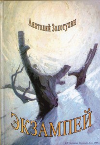

Вірші з книги “Екзампей” Posted on March 2, 2016 by Anatoliy Zolotukhin  БРАТОВІ Вітер віє, дощик плаче листя розстеляє, в золоту парчу неначе землю одягає. Клени з вербами сумують – оголила осінь, десь за хмарами нудьгують сонячко і просинь. Сиро, холодно і сумно, птахи не співають, тільки листячко безшумно до землі злітає. Чарівна краса повсюди тихо догорає, та байдужі ходять люди – ніхто не збирає . А тий зрячий, що все бачив спить собі у полі, і краса по ньому плаче, як по рідній волі… 23.10.1986 р. ЧОРНОБИЛЬ “І плачуть птахи-самовбивці, Щоб ми зосталися. Людьми…” Д. Кремінь “Як третій янгол вострубив, На землю Гога та Магога Злетіла зірка на ім’я “Полин” І отруїла води від порога…” Чорнобиль вибухнув… А через день, уранці, Мій братик рідний помирав, І я тоді іще не знав, Що нас врятують вогнебранці. …Христа до того розіп’яли, Заради учнів Він воскрес, Вони ж навперебій Фомі казали: Зійшов Учитель із небес. А він їм твердив: – Я НЕ ВІРЮ, Аж поки пальці не уткну У ті від цвяхів, хресні діри… І дочекались, в мить одну Чорнобиль вибухнув З НЕВІРИ Безбожним подихлом могили… Благословенні ті єси, Хто вірив навіть у часи, Коли громили кліроси. І готувались до офіри, Яку вказав нам Божий Син: Чорнобиль повернув до віри – Хрест переміг Зірку-Полин! ………………………………… Здійснивши літію звичайну, Ми поминали дві біди, А я гадав: у чому тайна, Що поєднала їх сліди? Нарешті, шляхом Одіссея З Аїду вибрався живим, Одначе води Екзампея Коцита отруїли плин… Чорнобиль – Україні біль І “Екзампея” суть і сіль… 7.01.2004 р. ГУЛЯЙ ВІТРЕ Гуляй, вітре, гуляй, вітре, козаченько вільний, зажурився – йдеш повільно, разгулявся – сильний. Гуляй, вітре, бо немає, ні даху, ні двору, нема жінки, що кохає, дитячого хору. Нема часу для зупинки, бігти щойно треба, від хвилини до хвилинки, від землі до неба. І мені, неначе вітру, теж нема спокою, жене, жене час рукою відси, з цього світу… Т.Г. Шановним у царя не був, Елітність духу мав й без того. Він, як Гомер безмежних дум, Через віки нас судить з Богом. Еней поезій і Рембрант, Невичерпний пророк Украйни, Кобзар небес, життя жебрак, Оранти син й безодня тайни. Д.Д. Кіммерії Ольвійській Дим, Розмова з Богом на Парнасі, Еллін і дикопільский Див, Месія Гіпполаю на Пегасі, ІНЬ у житті та Ян у Часі. 1999 р. Д.Д. КРЕМІНЮ з нагоди вручення йому Державної премії ім. Т. Г. Шевченко Христос воскрес, мій дивний Кремінь! Тарас Григорович воскрес! Зійшов до тебе із небес розп’ятий за Украйну Геній. І ти з Андрієм Первозванним, дві частки Генія ви є: одним малює несказанно, тобою пише вірші знанні і разом з вами Він живе. Віднині, Дмитре, ти – Апостол, поезії життя Святий, пророк нескорений і постник, чий кожний вірш і кожний поступ благословлятимемо Сий. 23.04.1999 р. АНДРІЄВІ АНТОНЮКУ Гей, Андрію, гей у полі Вічність зірками сіяє, Б’ють копитом землю коні, Ніч з минулим розмовляє. Натягнули світла струни, Грай поволі та чувай, Як воскреснуть святі люди – На полотнах розпинай. Ніч-життя, як сон пролине, Часу марно не втрачай, Відтвори з малюнків крила Та й до вічності злітай… 2004 р. ЯБЛУКА ГЕСПЕРІД Д.Д. Креміню! Коли ти на дорогу яблука давав, Воно було і яблуком пізнання, І пам’яттю. На разі пригадав Один Геракла подвиг, із останніх… Згадав, як жили ми у Вавилоні, Ти був тоді Саггіль-кіна-уббіб, А я в Семирамидовім полоні Вже рими їв твої, як хліб… І час той відійшов, Семирамида, нам на лихо, голубкою злетіла на той світ, Аж доки я в Гомері не знайшов Тебе на службі Псамметіха. І саме там, в далекому Єгипті, Із Гільгамеша виплинув Геракл, Хоч не було вже на цім світі, Садів, висячих на горах. І там, мій брате, Діоскур-Гомер, Ім’я знайшов у “Битії” Мойсея. О, мрії молодості сфер, Як служба у Париса-Еврістея. Згадаймо, як питали ми Нерея, Де причаївся сад той Гесперід?! О, як він не хотів розкрити тайну, Приймаючи різноманітний вид, А ми тримались, доки він негайно На землю рідну нам не указав, Назвавши край гіпербореїв, І то була ріднесенька Гілея, Тепер Кінбурном хтось її назвав… Тече у Понт Дніпро, як Океан, І яблука растуть під оком Феба, І батько Гесперід, титан Атлант, В Криму тримає на раменах небо. А в Миколаєві Гомеровім – Аїд, Життя тримається на римі, Допоки квітне сад наш Гесперід, Ми будьмо вічно молодими… 12.01.2004 р.


{kind=link}